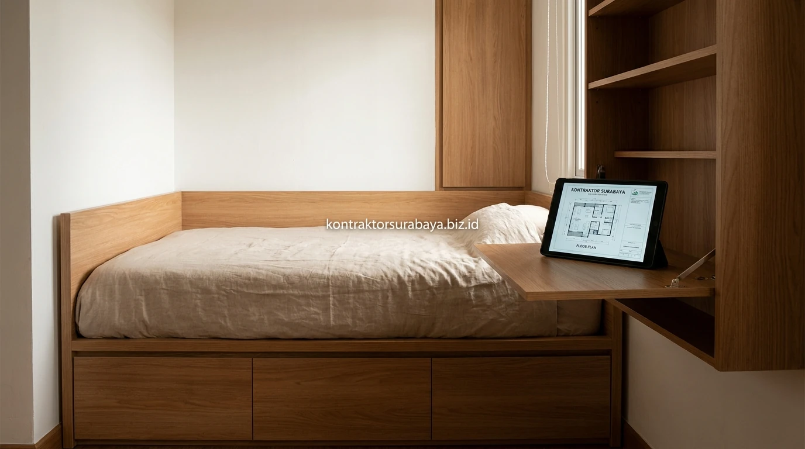

Apartemen tipe studio dengan luasan terbatas antara 18 hingga 24 meter persegi merupakan pilihan hunian favorit bagi kalangan profesional muda, eksekutif, maupun mahasiswa di pusat kota Surabaya. Namun, keterbatasan ruang sering kali membuat penghuni merasa terjebak dalam ruangan yang sesak, gelap, dan cepat berantakan. Melalui pendekatan desain interior yang tepat, unit studio dapat diubah menjadi hunian modern yang estetik, super fungsional, dan tetap terasa lega.
1. Tantangan Utama Menata Ruang pada Unit Apartemen Studio
Menggabungkan area tidur, ruang tamu, dapur, dan penyimpanan dalam satu ruangan tanpa sekat menjadi tantangan utama yang membuat unit studio mudah terasa sempit dan berantakan.
Berbeda dengan rumah tapak yang memiliki ruangan terpisah untuk setiap kebutuhan harian, unit studio menuntut perencanaan tata letak (space layout) yang sangat teliti. Kesalahan dalam memilih ukuran furnitur atau penempatan barang akan langsung memakan area sirkulasi jalan, membatasi aliran udara, dan membuat ruangan terasa sumpek seketika.
2. Furnitur Multifungsi untuk Memaksimalkan Ruang Terbatas
Sofa bed, meja lipat, tempat tidur dengan laci penyimpanan, dan rak partisi adalah empat furnitur multifungsi yang paling sering digunakan pada unit studio.
- Sofa Bed Ergonomis: Berfungsi ganda sebagai area duduk santai menerima tamu di siang hari dan dapat dibuka menjadi ranjang ekstra saat malam.
- Meja Makan / Kerja Lipat (Drop-leaf Table): Menempel rapi pada dinding dan hanya dibuka saat jam makan atau bekerja, menyisakan ruang gerak lantai yang luas.
- Dipan Tempat Tidur Berpenyimpanan (Storage Bed): Bagian bawah kasur dimanfaatkan sebagai laci-laci besar untuk menyimpan koper, selimut tebal, maupun pakaian musiman.
- Rak Partisi Terbuka Dua Arah: Menjadi pembatas visual antara zona tidur dan santai sekaligus tempat memajang buku serta dekorasi estetis.

3. Membagi Zona Fungsi tanpa Sekat Permanen
Perbedaan jenis lantai, warna dinding, atau ketinggian furnitur dapat menandai batas antar zona fungsi tanpa perlu membangun sekat permanen yang memakan ruang.
Membangun dinding partisi gipsum tebal hanya akan membuat unit studio terasa seperti lorong sempit yang pengap. Sebagai gantinya, gunakan partisi kisi-kisi kayu vertikal (slat wood), permainan aksen cat dinding two-tone, atau hamparan karpet area untuk mendefinisikan batas ruang santai dan tempat tidur secara anggun tanpa menghalangi pasokan cahaya alami dari jendela balkon.
"Kunci keberhasilan menata apartemen mungil terletak pada integrasi furnitur tersembunyi dan permainan cahaya. Ruang 21 m² pun bisa terasa seluas 35 m² bila setiap sentimeter dimanfaatkan secara cerdas."
4. Palet Warna dan Pencahayaan agar Studio Terasa Lebih Luas
Warna dinding terang, penggunaan cermin, pencahayaan berlapis, dan tirai tipis adalah empat elemen yang membantu unit studio terasa lebih luas dari ukuran sebenarnya.
- Dinding Bernuansa Terang: Dominasi warna off-white, beige, atau light oak memantulkan cahaya ke seluruh penjuru ruangan.
- Cermin Dinding Raksasa (Full-Height Mirror): Dipasang di area ruang makan atau lorong pintu masuk untuk menciptakan ilusi kedalaman ruang ganda.
- Pencahayaan Berlapis (Layered Lighting): Kombinasi lampu downlight tersembunyi, strip LED di bawah kabinet gantung, dan lampu meja menghasilkan suasana hangat yang dinamis.
- Tirai Sheer Tipis: Membiarkan cahaya mentari Surabaya masuk secara lembut di siang hari sembari tetap menjaga privasi dari gedung seberang.
5. Solusi Penyimpanan Vertikal untuk Studio Minim Lantai
Rak dinding, kabinet gantung, penyimpanan di bawah tempat tidur, dan ottoman multifungsi adalah empat solusi penyimpanan vertikal yang menjaga area lantai tetap lega.
Saat luas lantai (footprint) terbatas, solusi terbaik adalah memanfaatkan bidang vertikal hingga menyentuh plafon (full-height cabinetry). Lemari pakaian built-in yang dirancang dari lantai hingga ke langit-langit mampu menampung seluruh pakaian, tas, serta peralatan rumah tangga tanpa menyisakan celah atas yang menjadi sarang debu.
6. Kesalahan yang Membuat Studio Terasa Makin Sempit
Furnitur berukuran besar, terlalu banyak dekorasi, warna gelap dominan, dan pencahayaan yang kurang adalah empat kesalahan yang membuat unit studio terasa makin sempit.
- Membeli Furnitur Jadi yang Terlalu Gemuk: Sofa tebal dengan sandaran tangan lebar membuang ruang lantai berharga hingga puluhan sentimeter.
- Pernak-Pernik Terlalu Banyak (Clutter): Memajang terlalu banyak pajangan kecil di atas meja menciptakan polusi visual yang membuat ruangan terasa berantakan.
- Cat Dinding Gelap Tanpa Konsep: Menggunakan warna hitam atau abu-abu pekat di seluruh bidang dinding menyerap cahaya dan memberi kesan claustrophobic.
- Hanya Mengandalkan 1 Titik Lampu Utama: Menciptakan sudut-sudut mati yang gelap di area dapur dan meja kerja.
Setiap unit studio memiliki ukuran dan tata letak dasar yang berbeda, sehingga solusi penataan perlu disesuaikan dengan kondisi ruangan masing-masing penghuni. Lihat referensi visual lebih lengkap pada galeri proyek kami, atau pelajari cakupan layanan pada halaman jasa desain interior Surabaya.